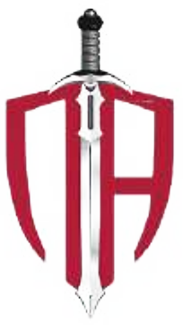

The Prophet
ﷺ
said
مَنْ سَلَكَ طَرِيقًا يَلْتَمِسُ فِيهِ عِلْمًا
سَهَّلَ اللَّهُ لَهُ بِهِ طَرِيقًا إِلَى الْجَنَّةِ
جو شخص علم حاصل کرنے کے لیے کسی راستے پر چلتا ہے، اللہ اس کے لیے جنت کا راستہ آسان کر دیتا ہے۔
“Whoever follows a path seeking
knowledge
, Allah makes easy for him a path to
Jannah
.”
Sahih Muslim 2699

The Prophet
ﷺ
said
أَحَبُّ الأَعْمَالِ إِلَى اللَّهِ تَعَالَى أَدْوَمُهَا وَإِنْ قَلَّ
اللہ کے نزدیک سب سے پسندیدہ عمل وہ ہے جو ہمیشہ کیا جائے، چاہے تھوڑا ہی ہو۔
“The most beloved deeds to Allah are those done
consistently
, even if they are small.”
Sahih Muslim 783
The Prophet
ﷺ
said
نِعْمَتَانِ مَغْبُونٌ فِيهِمَا كَثِيرٌ مِنَ النَّاسِ،
الصِّحَّةُ وَالْفَرَاغُ
دو نعمتیں ایسی ہیں جن کے بارے میں اکثر لوگ نقصان میں رہتے ہیں: صحت اور فراغت۔
“There are two blessings that many people waste:
health
and
free time
.”
Sahih al-Bukhari 6412
The Prophet
ﷺ
said
يَسِّرُوا وَلاَ تُعَسِّرُوا
آسانی پیدا کرو، مشکل پیدا نہ کرو۔
“Make things
easy
, and do not make them difficult.”
Sahih al-Bukhari 69 · Sahih Muslim 1734
The Prophet
ﷺ
said
إِنَّ اللَّهَ كَتَبَ الإِحْسَانَ عَلَى كُلِّ شَىْءٍ
بے شک اللہ نے ہر چیز میں احسان (عمدگی) کو لازم کیا ہے۔
“Indeed, Allah has prescribed
excellence (ihsan)
in everything.”
Sahih Muslim 1955
The Prophet
ﷺ
said
مَنْ دَلَّ عَلَى خَيْرٍ فَلَهُ مِثْلُ أَجْرِ فَاعِلِهِ
جو کسی بھلائی کی طرف رہنمائی کرے، اسے اس پر عمل کرنے والے کے برابر اجر ملتا ہے۔
“Whoever guides someone to
good
will have a reward like the one who does it.”
Sahih Muslim 1893